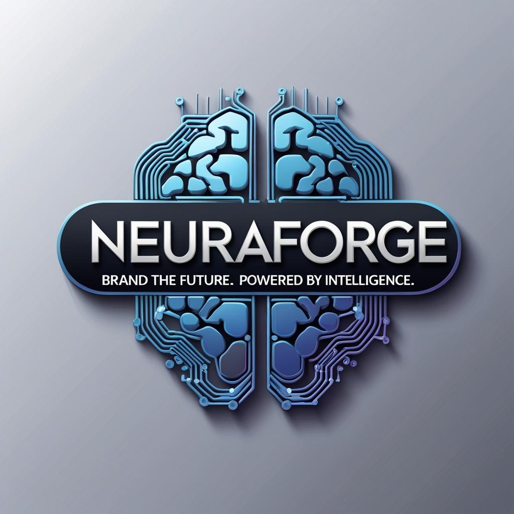
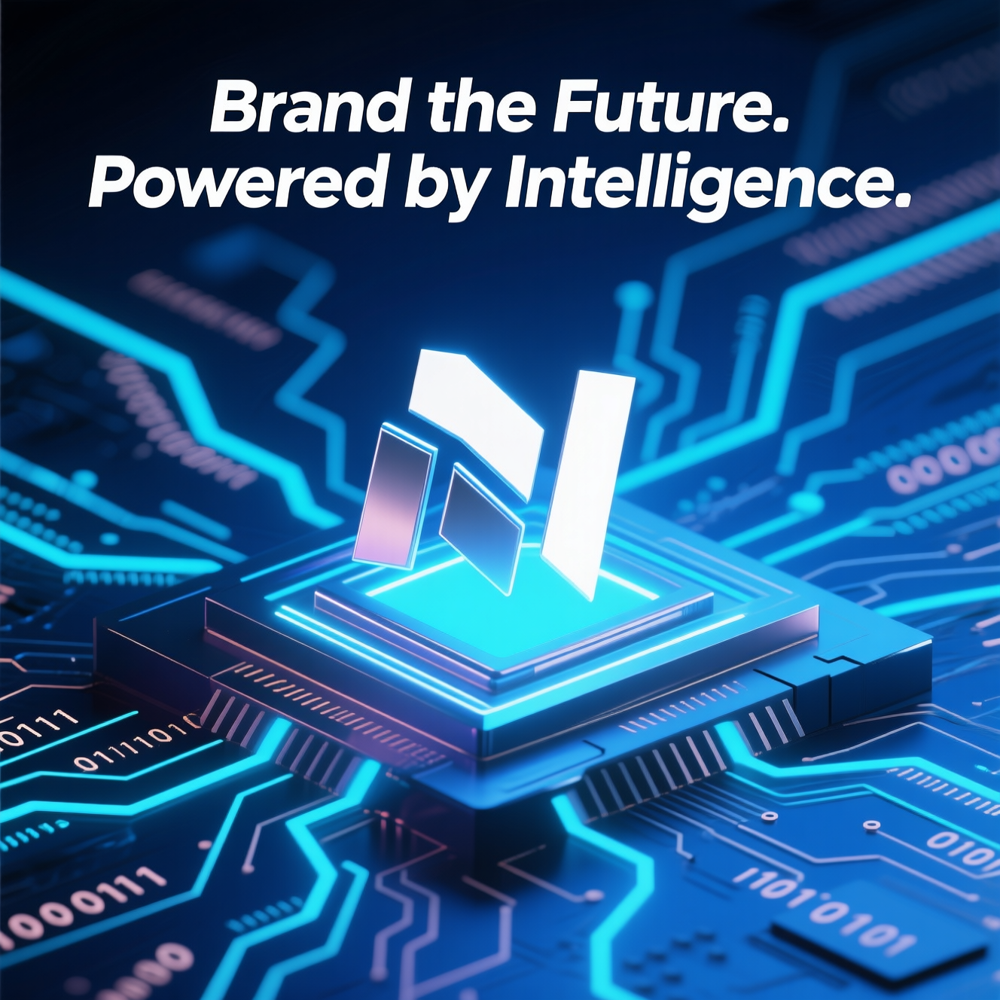

A showcase of AI-powered branding workflow and deliverables.
Phase 1: Branding & Business Setup
Task: Brainstorm and create a business name, tagline, and brand mission. Use ChatGPT to generate a compelling brand story that highlights AI-driven branding. Use Canva Magic Media to create a unique AI-generated logo.
ChatGPT Prompt:
Imagine you're creating a futuristic digital branding agency powered by AI. Generate a business name, tagline, and a compelling brand story that appeals to startups.
ChatGPT Result:
Business Name: NeuraForge
Tagline: "Brand the Future. Powered by Intelligence."
Brand Story:
In a world where attention is currency and innovation moves at the speed of thought, brands can no longer afford to be static. Startups, born from bold ideas and disruptive visions, need more than just design—they need an intelligent presence. That’s where NeuraForge was born.
Founded at the intersection of cutting-edge AI and world-class creative strategy, NeuraForge is a next-generation digital branding agency built specifically for startups who dare to lead tomorrow. We don’t just design logos—we engineer brand ecosystems that evolve in real time, adapt to markets, and resonate with humans.
Our AI-driven approach fuses data, design, and narrative to craft identities that are agile, scalable, and unforgettable. From your first pitch deck to your global launch campaign, NeuraForge is your neural engine for impact.
We’re not just branding companies—we’re forging legends of the future.
Canva Magic Media Prompt:
Create an AI-generated logo for a modern digital branding agency. The theme should be sleek, futuristic, and tech-driven.
Canva Magic Media Result:

Phase 2: AI-Generated Design & Marketing Content
Task: Social Media Content: Generate AI-enhanced posts and graphics. Website Mockups: Use Canva to design sample website layouts. Marketing Copy: Use ChatGPT to write engaging ads, blog posts, and product descriptions.
Social Media AI Prompt (ChatGPT):
Generate five engaging social media post ideas that promote AI-powered branding services. Each post should have a call to action.
ChatGPT Result:

“Your Brand, But Smarter 🤖✨”
Post Copy: Is your branding stuck in the past? Our AI-driven tools analyze market trends, audience behavior, and design preferences to craft a brand identity that actually works. No more guesswork. Just smart, strategic branding.
CTA: DM us “AI Brand” to get a free audit!
Canva Magic Media Prompt:
Generate an AI image of a vibrant social media post showcasing the power of AI branding for businesses.
Canva Magic Media Result:
Marketing Copy Prompt (ChatGPT):
Write an AI-generated blog post explaining why businesses should use AI-powered branding services to stay competitive.
ChatGPT Result:
Why Businesses Need AI-Powered Branding to Stay Competitive in the Digital Age
In today’s fast-moving digital landscape, branding isn’t just about logos and taglines anymore — it’s about delivering consistent, intelligent, and highly personalized experiences that resonate with your audience across every touchpoint. As consumer behavior becomes more dynamic and data-driven, traditional branding methods are struggling to keep up.
That’s where AI-powered branding steps in.
✅ Deep Consumer Insight, Instantly
AI tools can analyze mountains of data — social media activity, search behavior, sentiment analysis, and more — to identify what your audience wants before they even say it. That means brands can stay ahead of trends, deliver more targeted campaigns, and create offerings that truly resonate.
✅ Hyper-Personalization at Scale
Generic branding is dead. Today’s customers expect tailored experiences. AI enables businesses to create personalized brand interactions — from website content and emails to product recommendations — for thousands (or millions) of users simultaneously.
✅ Faster, Smarter Creative Production
AI tools like generative design, language models, and automated content editors speed up the creative process. Branding elements like ad copy, visuals, and even voice can be generated, tested, and optimized in real-time — saving time and increasing creative agility.
✅ Consistency Across Channels
With AI, brands can ensure visual and tonal consistency across all platforms. Whether it’s social media, web, email, or mobile — AI systems help maintain brand integrity while adapting messaging to each channel’s unique demands.
✅ Real-Time Optimization
Unlike traditional branding strategies that rely on gut feeling or delayed feedback, AI allows for real-time testing and refinement. Campaigns can be A/B tested automatically, and creative assets adjusted instantly based on performance metrics.
The Future Belongs to Intelligent Brands
If your competitors are using AI to build more agile, responsive, and relevant brands — and you’re not — you’re already behind. Businesses that embrace AI-powered branding are seeing stronger engagement, better ROI, and deeper customer loyalty.
AI isn’t here to replace creativity — it’s here to amplify it. By integrating AI into your branding strategy, you're not just keeping up with the future — you're shaping it.
Ready to Brand the Future? Partner with a forward-thinking AI branding agency that understands how to fuse intelligence with creativity. It’s time to evolve beyond static brand guidelines and start building living, learning brands powered by AI.
Let’s create something smarter. Together.
Phase 3: Client Outreach & Monetization
Task: Develop strategies for selling branding assets to clients. Use ChatGPT to craft compelling sales pitches and outreach emails. Design a Canva pitch deck to attract clients for your AI-powered branding service.
Sales Pitch Prompt (ChatGPT):
Write a persuasive email to a potential client explaining how AI-generated branding can help elevate their business presence.
ChatGPT Result:
Subject: Transform Your Brand with AI – Future-Proof Your Business Presence
Hi [Client's Name],
I hope this message finds you well.
I wanted to introduce you to a smarter way to brand — one that’s not just creative, but intelligent. At [Your Company Name], we specialize in AI-generated branding solutions that help businesses like yours stand out, connect with audiences faster, and scale consistently across digital platforms.
Here’s how AI can elevate your brand:
✅ Speed & Efficiency: AI delivers high-quality branding assets — logos, taglines, content, social visuals — in a fraction of the time it takes traditional methods.
✅ Data-Driven Creativity: We analyze trends, audience behavior, and market insights to craft a brand identity that truly resonates. No guesswork. Just results.
✅ Consistency Across Channels: From your website to social media, we ensure a cohesive brand presence that builds recognition and trust.
✅ Cost-Effective & Scalable: Whether you're a startup or scaling up, AI allows you to access agency-quality branding at a fraction of the cost — and adapt it as you grow.
In today’s competitive landscape, brands that embrace intelligent tools stay ahead. With our AI-powered approach, your brand will not only look better — it will think smarter.
Would you be open to a quick call this week to explore how this could work for you? I’d love to show you what’s possible.
Best regards, [Your Full Name] [Your Position] [Your Company Name] [Email Address] | [Phone Number] | [Website URL]
Canva Presentation Prompt:
Design a clean and compelling presentation slide that highlights the advantages of AI-generated branding for startups and small businesses.